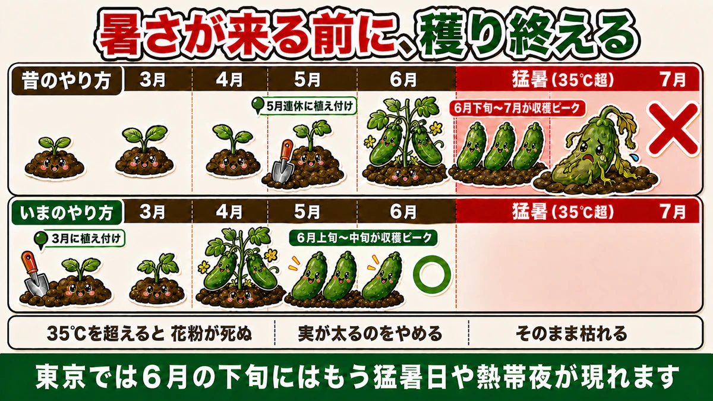
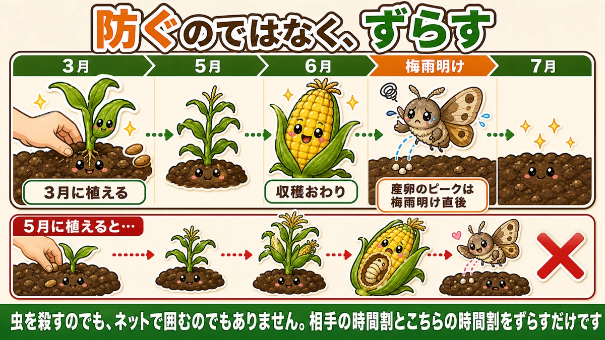
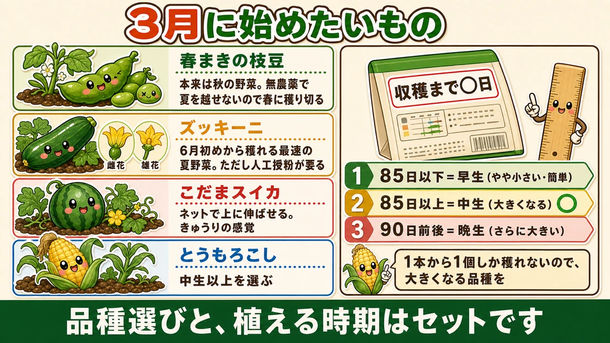

【3月にまく・植える野菜】夏野菜は前倒しの時代になりました🌱

🗨️「夏野菜は連休に植えるものでしょ？」
🗨️「毎年、実がつく前に暑さでだめになる」
🗨️「とうもろこしの中に虫がいた」
どうも、8150（えいこう）です🌱 家庭菜園歴8年、理科の教員免許を持っていて、有機・無農薬で野菜を育てています。
毎月の「今月まく・植える野菜」、3月号です。
3月は、1年でいちばん忙しい月です。冬のあいだ止まっていたことが、一斉に動き出します。
そして、私が家庭菜園を始めたころと、いちばん変わったのがこの月です。
先に、この記事でいちばん言いたいことを言っておきます。
★夏野菜は、前倒しの時代になりました。
昔は4月から5月の連休が植え付けのピークでした。今は違います。★暑さが来る前に穫り終える、という考え方に変わっています☺️

📖 この記事の目次
なぜ前倒しになったのか
6月下旬には、もう猛暑日が来る
理由は、はっきりしています。★夏が早く来るようになったからです。
東京では、★6月の下旬にはもう猛暑日（35℃超）や熱帯夜（25℃超）が現れます。梅雨明けを待たずに、真夏が始まります。
人間にとってもつらい気温ですが、★野菜のほうがもっとつらいんです。
- 35℃を超えると、光合成より呼吸のほうが優勢になる
- 花粉が死んで、受粉しなくなる
- 実が太るのをやめる
- そのまま枯れる
だから、ピークを前に持ってくる
つまり、こういうことです。
★猛暑が来る前に、収穫のピークを終わらせる。
5月の連休に植えると、実がつきはじめるのが6月下旬から7月です。まさに猛暑と重なります。ここで多くの夏野菜が止まります。
3月に始めれば、6月には穫れています。★暑くなる前に、一番おいしいところを取り切れるわけです。
じゃがいもと、同じ考え方
前にじゃがいもの話をしたとき、「6月初めまでに穫らないと暑さで枯れる」とお伝えしました。だから2月に植えて、1月から芽出しをする、と。
★あれと同じ考え方を、夏野菜全体に広げるのが3月です。
じゃがいもだけが特別なのではなく、★今はどの野菜も「暑くなる前に」で考える時代になりました。
★逆算で、虫を避ける
とうもろこしの、いちばんの敵
とうもろこしを育てたことがある方なら、一度は見たことがあると思います。皮をむいたら、実の中に虫がいる。
★アワノメイガという蛾の幼虫です。
親の蛾が卵を産みつけて、孵った幼虫が実の中へ入っていきます。中にいるので、外から薬をかけても効きません。無農薬なら、なおさら手が出せません。
産卵のピークは、梅雨明け直後
ここで大事な事実があります。
★アワノメイガが卵を産むピークは、梅雨明けの直後です。
つまり、時期が決まっているんです。だとすれば、やることはひとつです。
★梅雨明けまでに、収穫を終わらせてしまえばいい。

3月に植えれば、それが可能になります。幼虫が動き出すころには、もうとうもろこしは畑にありません。
★「防ぐ」ではなく「ずらす」
これは、無農薬でやるうえでとても大事な考え方だと思っています。
虫を殺すのでも、ネットで囲むのでもありません。★相手の時間割と、こちらの時間割をずらすだけです。
- 虫が来る時期を知る
- その前に終わらせる
薬も道具も要りません。★カレンダーだけで勝てます。
私はこれを知ってから、とうもろこしの見方が変わりました。うまくいかない年は、たいてい植えるのが遅かっただけでした。
とうもろこしの品種は「日数」で選ぶ
タネ袋の数字を見る
前に、タネ袋は裏から読む話をしました。とうもろこしでは、その中の★「収穫までの日数」を見ます。
- ★85日以下 … 早生（わせ）。やや小さいが、簡単
- ★85日以上 … 中生（なかて）。大きくなる
- ★90日前後 … 晩生（おくて）。さらに大きくなる可能性
★日数が長いほうが、大きくなる
法則は単純です。★育つ時間が長いほど、実は大きくなります。
そして、とうもろこしには特別な事情があります。★1本の株から、基本的に1個しか穫れません。
トマトなら1株から何十個も穫れますから、多少小さくても気になりません。でもとうもろこしは1個です。だったら★大きくなる品種を選んだほうがいい。
私は中生以上をおすすめします。ただし日数が長いぶん、★3月に植えることが前提になります。5月に植えて90日の品種を選ぶと、梅雨明けに間に合いません。
★品種選びと、植える時期はセットです。
3月に始めたい野菜

春まきの枝豆
枝豆は、★本来は秋に穫る野菜です。
ところが、★無農薬で夏を越させるのが本当に難しい。カメムシがついて、実が入りません。私も何度も失敗しました。
そこで開発されたのが、★春にまける早生の品種です。夏が本格化する前に穫り切ってしまう。ここでも「ずらす」考え方です。
品種と時期を守ることが条件になります。秋まき用の品種を春にまいてもうまくいきません。
ズッキーニ ── いちばん早く穫れる
★成長が早く、順調なら6月初めから収穫できます。
★夏野菜としては、いちばん早い収穫になります。3月に植えて6月に穫れる。待つ時間が短いので、初めての方にも向いています。
ただし、ひとつ注意点があります。
★ズッキーニは、雌花と雄花が別々に咲きます。
雌花に雄花の花粉がつかないと実になりません。そして★まだ寒い時期は、受粉してくれる蜂などの虫が少ないんです。
雌花が咲いたのに、小さいまま黄色くなって落ちる。これは受粉できなかったサインです。
対策は簡単で、★人工授粉をします。雄花を摘んで、花びらを取って、雌花の中心にちょんちょんと当てる。それだけです。朝のうちにやってください。
こだまスイカ
スイカは場所を取るイメージがありますが、★こだまスイカならネットを使って上に伸ばせます。きゅうりを育てる感覚に近いです。
大玉より扱いやすく、★穫ったあと一気に食べきらなくていいのも家庭向きです。
トマト・ナス・きゅうりの苗づくり
2月号でお伝えしたとおり、この3つは★植え付けの2か月前にタネをまきます。
2月末にまいたものは、3月のあいだ育苗中です。ここでの管理は、また別の回でくわしくお話しします。
タネからやらない場合は、4月に苗を買うことになります。それでも問題ありません。★ただ、選べる品種の数は全然違います。
葉物と根菜は、続けてまける
前回お話しした春の葉物・根菜も、3月が本番です。
小松菜、ほうれん草、小かぶ、春大根、にんじん。★3月になれば防寒は片方でよくなるので、2月より楽になります。
★3月から、虫が出はじめる
3つの条件がそろう
3月になると、今まで見なかった虫が急に見られるようになります。
理由は3つそろうからです。
- ★気温が上がる
- ★日が長くなる
- ★餌になる野菜が畑に増える
冬のあいだは、どれもありませんでした。だから虫がいなかった。★2月までの静かな畑を基準にしないでください。
見回りを始める月
私は3月から、畑に行くたび葉の裏を見る習慣にしています。
- そら豆の成長点 … アブラムシ
- アブラナ科の葉裏 … 青虫の卵
- 株元 … ヨトウムシ
★小さいうちに見つければ、指でつまむだけで終わります。大きくなってからでは間に合いません。
無農薬でいちばん効くのは、殺す道具ではなく★見る回数です。
3月の管理 ── すでに畑にあるもの
にんにく
- ★3月が最後の追肥です
- にんにくは生育期間が長いので、追肥は全体で2回ほど
- わき芽が出たら、早めにかき取ってください
玉ねぎ
- ★3月頭が止め肥。これ以降は何も入れません
- 草取りをしてください。玉ねぎは根が浅く、草に負けます
スナップエンドウ・そら豆
- ★3月は一気に伸びます。支柱は2月中に済ませておいてください
- そら豆はアブラムシの季節に入ります。成長点をこまめに見てください
じゃがいも
- 芽が出そろったら、芽かきと土寄せをします
- この話は、次回くわしくお話しします
3月は「間に合わせる」月
この記事の要点
- ★夏野菜は前倒しの時代。昔は4〜5月の連休がピークだった
- 東京では★6月下旬にはもう猛暑日・熱帯夜が現れる
- 35℃を超えると★花粉が死に、実が太るのをやめる
- だから★猛暑が来る前に収穫のピークを終わらせる
- ★じゃがいもと同じ考え方を、夏野菜全体に広げるのが3月
- とうもろこしの敵は★アワノメイガ。実の中に入るので薬が効かない
- ★産卵のピークは梅雨明け直後。3月に植えれば収穫が先に終わる
- ★「防ぐ」のではなく「ずらす」。カレンダーだけで勝てる
- とうもろこしは★タネ袋の日数で選ぶ（85日以下＝早生／85日以上＝中生／90日前後＝晩生）
- ★1本から1個しか穫れないので、大きくなる中生以上を。★品種と時期はセット
- 枝豆は本来★秋の野菜。無農薬で夏を越すのが難しいので★春まきの早生種を
- ズッキーニは★6月初めから穫れる最速の夏野菜。ただし★寒い時期は人工授粉が要る
- 3月から虫が出るのは★気温・日の長さ・餌の3つがそろうから
- 無農薬でいちばん効くのは★見る回数
全部やろうとしなくて大丈夫です。まずはとうもろこしのタネ袋を1つ手に取って、収穫までの日数を見てみてください。そこから逆算すると、いつ植えればいいかが自分で決められます🌽
次回は、じゃがいもの話です。芽が出そろったあとの、芽かきと土寄せをお話しします🥔
ここまで読んでくださって、ありがとうございました。
とうもろこしのタネ
3月に植えれば、アワノメイガが卵を産む梅雨明けより前に収穫が終わります。虫を殺すのでもネットで囲むのでもなく、時間割をずらすだけ。買うときはタネ袋の「収穫まで◯日」を見てください。85日以上の中生なら大きくなります。
![[商品価格に関しましては、リンクが作成された時点と現時点で情報が変更されている場合がございます。]](https://hbb.afl.rakuten.co.jp/hgb/56eb99ba.ba083ff3.56eb99bb.e7e05161/?me_id=1436583&item_id=10000119&pc=https%3A%2F%2Fthumbnail.image.rakuten.co.jp%2F%400_mall%2Fyamatonoen%2Fcabinet%2F12534367%2F12597951%2F12597952%2Fimgrc0136347570.jpg%3F_ex%3D240x240&s=240x240&t=picttext "[商品価格に関しましては、リンクが作成された時点と現時点で情報が変更されている場合がございます。]")

枝豆のタネ（春まき）
枝豆は本来、秋に穫る野菜です。でも無農薬で夏を越させるのが本当に難しい。カメムシがついて実が入りません。だから夏が本格化する前に穫り切る、春まきの早生種を選びます。ここでも「ずらす」考え方です。
![[商品価格に関しましては、リンクが作成された時点と現時点で情報が変更されている場合がございます。]](https://hbb.afl.rakuten.co.jp/hgb/552615f0.9cc2855e.552615f1.776f7de9/?me_id=1251188&item_id=10000185&pc=https%3A%2F%2Fthumbnail.image.rakuten.co.jp%2F%400_mall%2Fyonezawa%2Fcabinet%2Ftane01%2F1011mame%2Fbeerfriendgf.jpg%3F_ex%3D240x240&s=240x240&t=picttext "[商品価格に関しましては、リンクが作成された時点と現時点で情報が変更されている場合がございます。]")
こだまスイカのタネ（ピノ・ガール）
場所を取るイメージがありますが、こだまならネットで上に伸ばせます。きゅうりを育てる感覚に近い。大玉より扱いやすく、穫ったあと一気に食べきらなくていいのも家庭向きです。
![[商品価格に関しましては、リンクが作成された時点と現時点で情報が変更されている場合がございます。]](https://hbb.afl.rakuten.co.jp/hgb/56eb9cf5.81ab6dc5.56eb9cf7.881aa775/?me_id=1371758&item_id=10000697&pc=https%3A%2F%2Fthumbnail.image.rakuten.co.jp%2F%400_mall%2Fsuzunoen%2Fcabinet%2F07015728%2Fcompass1582531889.jpg%3F_ex%3D240x240&s=240x240&t=picttext "[商品価格に関しましては、リンクが作成された時点と現時点で情報が変更されている場合がございます。]")
きゅうりネット
こだまスイカを上に伸ばすのに使います。18cm目なので、つるが自分で絡んでいきます。もちろん本来のきゅうりにも。実が重くなるので、支柱としっかり結んでください。
![[商品価格に関しましては、リンクが作成された時点と現時点で情報が変更されている場合がございます。]](https://hbb.afl.rakuten.co.jp/hgb/56d221a0.da732c49.56d221a1.b57a6709/?me_id=1230952&item_id=10006162&pc=https%3A%2F%2Fthumbnail.image.rakuten.co.jp%2F%400_mall%2Fnou-nou%2Fcabinet%2Fnousi2%2F0108008000005.jpg%3F_ex%3D240x240&s=240x240&t=picttext "[商品価格に関しましては、リンクが作成された時点と現時点で情報が変更されている場合がございます。]")